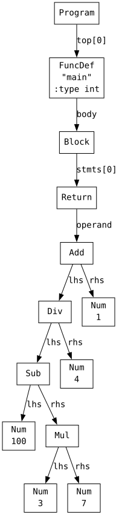
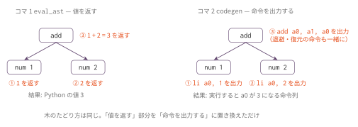
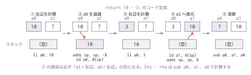

コマ2: 算術式コード生成
今日のゴール
整数リテラルと算術演算を RV64 アセンブリに変換する。
コマ1では、AST を直接評価して Python の整数値を返した。 この回では、AST を評価する代わりに、同じ計算を行う RV64 アセンブリを出力する。
codegen(node) の約束は次の通り。
nodeが表す式を計算し、その結果が実行時にa0レジスタに入るようなアセンブリを出力する。
たとえば、return 1 + 2 * 3; をコンパイルし、生成されたプログラムを実行すると、終了コードが 7 になることを目指す。
この回で扱う範囲
対象にするプログラムは、次の形に限定する。
int main() {
return 式;
}扱う式は以下の通り。
| 種類 | 例 |
|---|---|
| 整数リテラル | 42 |
| 単項マイナス | -3 |
| 足し算 | 1 + 2 |
| 引き算 | 10 - 3 |
| 掛け算 | 2 * 3 |
| 割り算 | 10 / 2 |
| 剰余 | 10 % 3 |
| カッコ | (1 + 2) * 3 |
変数、代入、if、while、関数呼び出しはまだ扱わない。
関数本体には return 式; を1個だけ置く。
共通の Parser は空本体や複数の return も受理するが、この回の実行対象は上の形に限定する。
途中の return で関数を終了するコード生成はコマ4で実装する。
この回までの言語仕様（EBNF）
この回までに書けるプログラムの文法を、累積の形でまとめる。
記法と最終形の全体像は
language_spec.md の「形式文法（EBNF）」を参照。
前回から文法・優先順位の追加や変更はありません。
この回までの文法全文（15行）
program ::= func_def /* ユーザー定義関数はコマ6 */
func_def ::= 'int' 'main' '(' ')' func_body /* 一般の関数定義はコマ6 */
func_body ::= '{' stmt '}'
stmt ::= 'return' expr ';'
expr ::= binary_expr /* 代入はコマ3、条件はコマ4 */
binary_expr ::= unary_expr { bin_op unary_expr }
bin_op ::= '*' | '/' | '%' /* 優先順位・結合は下の表。関係・等値はコマ4、論理はコマ13 */
| '+' | '-'
unary_expr ::= primary_expr
| '-' unary_expr
primary_expr ::= INT_LITERAL
| '(' expr ')'この回までの二項演算子の優先順位（高い順）:
| 優先順位 | 演算子 | 結合 |
|---|---|---|
| 1（高） | * / % |
左 |
| 2 | + - |
左 |
表の読み方はコマ1の「木の形は規則で決まっている」と
language_spec.md の「演算子」を参照。
字句トークン（INT_LITERAL など）の定義はどの回でも同じであるため、ここでは繰り返さない。
language_spec.md の「字句トークン」を参照。
AST を確認する
コマ1と同じように、まず Parser が返す AST を確認する。
python3 scaffold/parse_viewer.py sessions/02_arithmetic_codegen/tests/complex.cこのプログラムの内容は次の通り。
int main() {
return (100 - 3 * 7) / 4 + 1;
}実行すると、次のようなS式が表示される。
(program
(funcdef "main" :type int (params)
(block
(return
(add
(div
(sub (num 100)
(mul (num 3) (num 7)))
(num 4))
(num 1))))))
この式は、元のCコードでは次の形である。
return (100 - 3 * 7) / 4 + 1;Parser は演算子の優先順位とカッコを処理し、次のような構造のASTを返している。
(add
(div
(sub (num 100)
(mul (num 3) (num 7)))
(num 4))
(num 1))codegen() は、この木を再帰的にたどりながら、各ノードに対応するアセンブリを出力する。
コマ1との違い
コマ1の eval_ast() は、計算結果を Python の値として返していた。
eval_ast(node) -> 整数値コマ2の codegen() は、計算結果を直接返さない。
代わりに、計算を行うアセンブリを出力する。
codegen(node) -> アセンブリを出力するただし、再帰的にASTをたどる考え方は同じである。
| コマ1 | コマ2 |
|---|---|
ND_NUM を見たら数値を返す |
ND_NUM を見たら li を出力する |
ND_ADD なら左右を評価して足す |
ND_ADD なら左右を計算する命令列を出力して add する |
| 結果は Python の戻り値 | 結果は実行時の a0 レジスタ |

木のたどり方はコマ1と同じで、「値を返す」部分が「命令を出力する」に置き換わる。
使うRV64命令
まず、命令の一般的な書式で、読み出し元と書き込み先を区別する。
tar は結果を書き込むレジスタ、src1・src2 は値を読み出すレジスタ、
base はメモリアドレスの基準となるレジスタを表す。
これらは説明用の記号であり、実際のアセンブリではレジスタ名を指定する。
指定できる整数レジスタの集合は次の通り。
R = {x0, x1, …, x31}
tar, src1, src2, base ∈ Ra0 などは x0〜x31 の別名である。この回で使うのは次の集合である。
R02 = {a0, a1, sp, s0, ra} ⊂ R
a0 = x10, a1 = x11, sp = x2, s0 = x8, ra = x1命令として指定できる集合 R と、この回のコード生成で選ぶ集合 R02 は区別する。
x0（別名 zero）は常に0で、書き込んでも値は変わらない。
レジスタの用途と呼び出し規約は
rv64_reference.mdを参照。
この回で使う主な命令の一般形は以下である。
処理欄の tar ← src1 + src2 は、「src1 と src2 の値を読み、
計算結果を tar に書く」という意味である。
| 一般形 | 処理 |
|---|---|
li tar, N |
即値 N を tar に書く |
neg tar, src1 |
tar ← -src1 |
add tar, src1, src2 |
tar ← src1 + src2 |
sub tar, src1, src2 |
tar ← src1 - src2 |
mul tar, src1, src2 |
tar ← src1 * src2 |
div tar, src1, src2 |
src1 を src2 で割った符号付き除算の商を tar に書く（0方向へ丸める） |
rem tar, src1, src2 |
同じ符号付き除算の余りを tar に書く |
addi tar, src1, imm |
tar ← src1 + imm |
sd src1, offset(base) |
base の値 + offset の番地へ、src1 の値を8バイト保存する |
ld tar, offset(base) |
base の値 + offset の番地から8バイト読み、tar に書く |
imm と offset は符号付き12ビットの整数で、範囲は次の集合で表せる。
offset の単位はバイトである。
imm, offset ∈ {n ∈ ℤ | -2048 ≤ n ≤ 2047}li と neg は、アセンブラが実際の命令に置き換える疑似命令である。
li の N はロードする整数定数で、上の12ビットの範囲に限定されない。
詳しい命令の定義はRISC-V Assembly Programmer’s Manualを参照。
一般形と、この回の具体例の対応
例えば、引き算の命令は次のように対応する。
一般形：sub tar, src1, src2
具体例：sub a0, a1, a0
tar=a0, src1=a1, src2=a0これは「更新前の a1 から更新前の a0 を引き、結果を a0 に書く」という意味である。
書き込み先と読み出し元には、同じレジスタを指定できる。
a0 が2回現れても、それぞれの役割は命令内の位置で決まる。
スタックの操作も、一般形へ具体的なレジスタと整数を当てはめたものである。
| 具体例 | 引数の対応 | この回での用途 |
|---|---|---|
addi sp, sp, -8 |
tar=sp, src1=sp, imm=-8 |
スタックを8バイト分確保する |
sd a0, 0(sp) |
src1=a0, base=sp, offset=0 |
計算結果をスタックに保存する |
ld a1, 0(sp) |
tar=a1, base=sp, offset=0 |
保存した値を a1 に戻す |
addi sp, sp, 8 |
tar=sp, src1=sp, imm=8 |
確保したスタックを戻す |
sd が書き換えるのはメモリであり、値を渡す src1 やアドレスを渡す base は変わらない。
codegen の基本方針
Codegen02 クラスの codegen(node) は、node.kind を文字列で見て match で処理を分ける。
本体のディスパッチはスケルトンにすでに書いてある。学習者が実装するのは各 handler method である。
node.kind |
実装する handler method | 生成する処理 |
|---|---|---|
'Num' |
codegen_Num |
node.val を a0 に入れる |
'Neg' |
codegen_Neg |
node.operand を計算し、a0 を neg する |
'Add' |
codegen_Add |
左右を計算し、足す |
'Sub' |
codegen_Sub |
左右を計算し、引く |
'Mul' |
codegen_Mul |
左右を計算し、掛ける |
'Div' |
codegen_Div |
左右を計算し、割る |
'Mod' |
codegen_Mod |
左右を計算し、剰余を求める |
重要な約束は、どのノードでも、codegen(node) が終わった時点でそのノードの計算結果が a0 に入っているようにすることである。
二項演算の handler は共通補助メソッド _codegen_binary_value(node, op) に委譲するとコードの重複が減らせる。
二項演算の生成パターン
二項演算では、左辺と右辺の2つの値が必要になる。
しかし、codegen() の結果は常に a0 に入る。
そのため、左辺を計算した後、その値を一度スタックに退避してから右辺を計算する。
基本パターンは次の通り。
1. 左辺を codegen する
-> 左辺の値が a0 に入る
2. a0 をスタックに保存する
3. 右辺を codegen する
-> 右辺の値が a0 に入る
4. スタックから左辺の値を a1 に戻す
5. a1 op a0 を計算し、結果を a0 に入れる
この退避のパターンは、この後の代入（コマ3）や関数呼び出し（コマ6）でも繰り返し使う。
このパターンを使うと、二項演算の直前には次の状態になる。
| レジスタ | 内容 |
|---|---|
a1 |
左辺の値 |
a0 |
右辺の値 |
したがって、10 - 3 は次のように計算する。
sub a0, a1, a0これは a0 = a1 - a0、つまり「左辺 - 右辺」を意味する。
div と rem も順序が重要である。
| Cの式 | 使う命令 |
|---|---|
lhs - rhs |
sub a0, a1, a0 |
lhs / rhs |
div a0, a1, a0 |
lhs % rhs |
rem a0, a1, a0 |
sub a0, a0, a1 のように逆にすると、rhs - lhs になってしまう。
コード生成器の枠組み
コード生成器は Codegen02 クラスとして実装する。すべての状態はインスタンス変数に保持され、
アセンブリの行は list[str] に蓄積して最後にまとめて出力する。
class Codegen02:
def __init__(self) -> None:
self._out: list[str] = [] # 出力行バッファ
def emit(self, line: str) -> None:
self._out.append(line)
def output(self) -> str:
return '\n'.join(self._out) + '\n'gen_func(node) は関数定義ノードを受け取り、次の hook を順に呼んでアセンブリを出力する。
1. _reset_func_state(node) → 関数状態の初期化。frame_size を返す（コマ2 では 0）
2. _emit_func_prologue(name, frame_size) → プロローグを出力する
3. _emit_func_body(body) → main の return 式を codegen() に渡す
4. _emit_func_epilogue(frame_size) → エピローグを出力するコマ2 では関数の枠組み（プロローグ・エピローグ）も学習者が実装する。
後続回では一度作ったこの枠組みが importlib による継承で引き継がれる。
frame_size はローカル変数のために確保する領域のバイト数で、この回は常に 0 である。
その領域に ra/s0 の保存用16バイトを加えて、スタックフレームを作る。
プロローグは次の形で出力する。以下の frame_size を含む式は説明用の表記であり、
Pythonで計算した数値をアセンブリへ埋め込む。
addi sp, sp, -(frame_size + 16)
sd ra, frame_size + 8(sp)
sd s0, frame_size(sp)
addi s0, sp, frame_size + 16エピローグでは、同じ frame_size を使って保存した値を復元する。
ld s0, frame_size(sp)
ld ra, frame_size + 8(sp)
addi sp, sp, frame_size + 16
ret例えばプロローグの最初の行は self.emit(f' addi sp, sp, -{frame_size + 16}') と書く。
この回の出力は addi sp, sp, -16 になるが、実装では frame_size を使う。
コマ3で変数領域が増えても、プロローグ・エピローグを書き直さずに引き継げるためである。
各レジスタの意味は次の通り。
| レジスタ | 役割 |
|---|---|
a0 |
戻り値を入れるレジスタ |
sp |
スタックポインタ |
s0 |
フレームポインタ |
ra |
関数から戻る先のアドレス |
この回では、ローカル変数や関数呼び出しはまだ扱わない。
そのため、プロローグ・エピローグの細部を完全に理解していなくても、codegen() の実装に進んでよい。
ただし、最終的に ret する時点で a0 に return 式の値が入っていれば、C の main 関数の戻り値として扱われる。
qemu-riscv64 ./out; echo $? で確認している終了コードは、この a0 の値である。
編集するファイル
mycc.py
Codegen02 クラスの以下の TODO を埋める。
| 実装対象 | 役割 |
|---|---|
codegen_Num |
既に実装例がある。li a0, node.val |
codegen_Neg |
単項マイナス |
codegen_Add / codegen_Sub / codegen_Mul / codegen_Div / codegen_Mod |
二項演算。_codegen_binary_value に委譲 |
_codegen_binary_value |
二項演算の共通処理（退避 → 計算 → 復元） |
_emit_func_prologue |
.globl, 関数ラベル, ra/s0 保存 |
_emit_func_body |
body.stmts を gen_stmt() で処理 |
_emit_func_epilogue |
s0/ra 復元、sp を戻し ret |
gen_stmt_Return |
return の式を codegen() し、結果を a0 に残す |
codegen(node) 本体の match ディスパッチはスケルトンにあらかじめ書かれている。
ここで埋めた TODO は、コマ3 以降に importlib の継承でそのまま引き継がれる。
後のコマで書き直すことはないので、この回で全部埋めきること。
実装手順
codegen_Numが実装例として埋まっていることを確認する（li a0, <val>）。codegen()/gen_stmt()のmatchディスパッチ、一時値の退避に使う_push_a0()/_pop_into(reg)、gen_func()の呼び出し順もあらかじめ書かれている_emit_func_prologue(name, frame_size)と_emit_func_epilogue(frame_size)を埋め、関数の枠（.globl・関数ラベル・ra/s0の退避と復元・spの戻し・ret）を出せるようにする_emit_func_body(body)とgen_stmt_Return(node)を埋め、return <式>;の値がa0に残るようにする（ここまででreturn 42;相当が動く。どのテストでも必要）_codegen_binary_value(node, op)を埋める（左辺をcodegen→self._push_a0()→ 右辺をcodegen→self._pop_into('a1')→<op> a0, a1, a0。spを直接動かすと積んでいる一時値の個数self._depthがずれ、コマ6 のアラインメント調整が狂う）codegen_Add/codegen_Sub/codegen_Mulを_codegen_binary_valueへ委譲する（add/sub/mul）codegen_Div/codegen_Modを同じ形で委譲する（div/rem）codegen_Neg(node)を埋める（node.operandをcodegenしてからneg a0, a0）
tests/
上から順に通していくと、どこで詰まっているかが1機能ぶんに絞られる。 「通る目安」は実装手順の番号である。
| ファイル | 内容 | 通る目安 | 期待値 |
|---|---|---|---|
target.c |
1 + 2 * 3 |
手順5 | 7 |
prec_div.c |
(100 - 3 * 7) / 4 + 1 |
手順6 | 20 |
mod_div.c |
100 / 4 + 1 |
手順6 | 26 |
nested.c |
(1 + 2) * (3 + 4) |
手順5 | 21 |
add.c |
1 + 2 |
手順5 | 3 |
sub.c |
100 - 79 |
手順5 | 21 |
mul.c |
掛け算 | 手順5 | 対応する .ans を参照 |
div.c |
17 / 5 |
手順6 | 3 |
mod.c |
17 % 5 |
手順6 | 2 |
prec.c |
2 + 3 * 4 |
手順5 | 14 |
paren.c |
カッコ付き算術式 | 手順5 | 対応する .ans を参照 |
complex.c |
(100 - 3 * 7) / 4 + 1 |
手順6 | 20 |
div_round.c |
負の数の / と %（-7 / 2 は -3、-7 % 2 は -1） |
手順7 | 69 |
テスト
python3 scaffold/test_runner.py sessions/02_arithmetic_codegenこのテストは次の流れで動く。
Cソース
-> mycc.py が RV64 アセンブリを出力
-> riscv64-linux-gnu-gcc が実行ファイルに変換
-> qemu-riscv64 で実行
-> 終了コードを .ans と比較個別に動かす場合は、次のようにする。
python3 sessions/02_arithmetic_codegen/mycc.py sessions/02_arithmetic_codegen/tests/target.c \
| riscv64-linux-gnu-gcc -x assembler -static - -o out
qemu-riscv64 ./out
echo $?終了コードが 7 になれば、基本形は成功である。
注意
この回のテストでは、割り算・剰余の右辺は 0 にならない。
負数を含む割り算・剰余も扱う。RV64 の div / rem は 0 方向への切り捨て
（C の仕様どおり）で動作するため、追加の分岐なしに div_round.c が通る。
Python の // や % は負数に対して切り捨て方向が異なる（0 方向ではなく負の無限大方向）ので、
Python で先に手計算して確かめるときは注意する。
生成したアセンブリを1命令ずつ実行して確認したいときは、学習ツールの実行表示 に貼り付ける。
この回の完成形に相当する OCaml 版参考実装が ../../workbook/ocaml/README.md にある。完成相当の実装なので、まず自分の実装方針を検討してから確認すること。